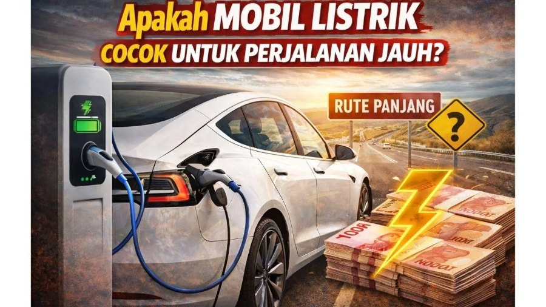

Jarak Tempuh Geely EX2 395 km: Apa Artinya di Jalan Nyata?

Angka 395 km adalah jarak tempuh gabungan Geely EX2 menurut standar NEDC. Angka ini berguna untuk membandingkan mobil, tetapi bukan janji untuk setiap perjalanan. Mari kita pahami artinya agar ekspektasimu tepat.
Apa itu NEDC
NEDC (New European Driving Cycle) adalah prosedur uji standar di laboratorium. Kecepatan dan kondisi ujinya dibuat sama untuk semua mobil sehingga hasilnya bisa dibandingkan. Brosur resmi Geely juga menyebut angka ini diperoleh dengan metode tersebut dan hasil nyata akan bervariasi.
Kenapa jarak tempuh nyata biasanya lebih pendek
- Kecepatan tinggi. Hambatan angin naik tajam di atas 80 km/jam, sehingga konsumsi di jalan tol lebih besar.
- AC menyala. Di iklim tropis, pendingin kabin hampir selalu dipakai.
- Beban. Penumpang penuh dan barang bawaan menambah konsumsi.
- Gaya mengemudi. Akselerasi agresif lebih boros.
- Kondisi jalan dan suhu. Tanjakan dan kemacetan berpengaruh.
- Tekanan ban. Ban kurang angin menambah hambatan.
Perkiraan sederhana untuk perencanaan
Banyak pengguna mobil listrik memakai patokan pemakaian nyata sekitar 70 sampai 85 persen dari angka NEDC. Untuk EX2, itu berarti kira-kira 275 sampai 335 km per pengisian penuh. Ini perkiraan umum, bukan angka resmi, dan hasil nyatamu bisa di luar rentang tersebut.
| Skenario | Perkiraan konsumsi nyata | Perkiraan jarak per pengisian penuh |
|---|---|---|
| Kota, mode Eco, tenang | sekitar 12 kWh per 100 km | sekitar 340 km |
| Campuran kota dan tol | sekitar 14 kWh per 100 km | sekitar 290 km |
| Tol cepat, AC kencang, penuh muatan | sekitar 16 kWh per 100 km | sekitar 255 km |
Angka di tabel adalah asumsi ilustrasi dari kapasitas baterai 40,8 kWh dan tidak menyisakan cadangan. Gunakan untuk gambaran, lalu cocokkan dengan pengalamanmu saat test drive.
Cukupkah untuk kebutuhanmu
Sebagian besar pengemudi kota menempuh 30 sampai 60 km per hari. Dengan jarak tempuh nyata sekitar 290 km, pengisian di rumah cukup dilakukan beberapa hari sekali. Untuk perjalanan antarkota, rencanakan titik pengisian cepat. Pengisian DC 30 sampai 80 persen sekitar 25 menit, detailnya ada di cara mengisi daya EX2.
Tips agar lebih jauh
- Gunakan mode Eco untuk keseharian.
- Jaga tekanan ban sesuai rekomendasi.
- Mulai perjalanan dengan kabin yang sudah sejuk selagi mobil masih terhubung ke charger.
- Hindari akselerasi dan pengereman mendadak.
- Kurangi barang yang tidak perlu di bagasi.
Untuk memahami satuan kWh per 100 km, baca efisiensi mobil listrik. Untuk hitungan biaya, lihat biaya mengisi daya di rumah.
Contoh perencanaan nyata
Bayangkan kamu tinggal di BSD City dan sering ke Jakarta Pusat pulang pergi sekitar 70 km per hari. Dengan perkiraan jarak tempuh nyata 290 km, satu kali pengisian cukup untuk kira-kira empat hari. Jika kamu mengisi di rumah setiap malam, baterai hampir selalu terisi cukup, jadi kamu jarang memikirkan SPKLU sama sekali. Contoh ini hanya ilustrasi, jadi sesuaikan dengan rutemu sendiri dan gaya mengemudimu.
Ringkasan
Anggap angka 395 km sebagai bahan perbandingan antarmobil, dan pakai kisaran 275 sampai 335 km sebagai perkiraan perencanaan untuk campuran kota dan tol. Untuk perjalanan sehari-hari yang kurang dari 100 km, EX2 sangat memadai. Untuk perjalanan antarkota, kombinasikan dengan pengisian cepat di tengah jalan.
Kebiasaan perencanaan perjalanan jauh
- Cek rute dan titik pengisian sebelum berangkat.
- Jangan menunggu baterai hampir habis untuk mulai mencari SPKLU.
- Sisakan cadangan sekitar 10 sampai 15 persen saat tiba di tujuan.
- Manfaatkan waktu istirahat 25 menit untuk pengisian cepat dan makan siang.
Tanya jawab
Berapa jarak tempuh asli Geely EX2?
Angka resmi NEDC adalah 395 km. Pemakaian nyata umumnya lebih pendek dan sangat bergantung pada kecepatan, AC, muatan, dan gaya berkendara.
Apakah EX2 cukup untuk pulang pergi Jakarta dan sekitarnya?
Untuk perjalanan harian dalam kota dan sekitarnya cukup. Untuk perjalanan jauh, rencanakan pengisian di tengah jalan.
Apakah AC memengaruhi jarak tempuh?
Ya. AC memakai energi dari baterai yang sama, sehingga memengaruhi jarak tempuh, terutama di cuaca panas.